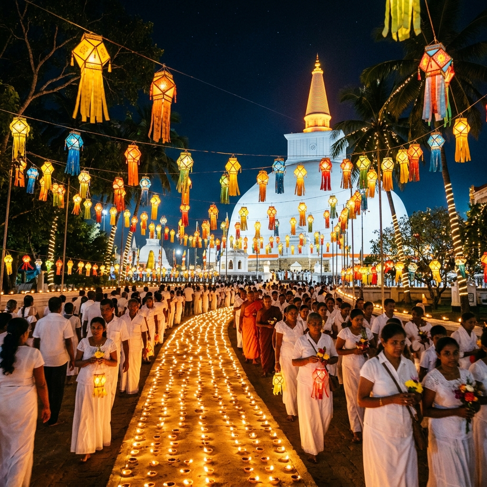

Events & Programs
Religious, cultural, and community activities organized by Korea Sri Lanka Maha Viharaya.
Featured Event

Poson Program & Community Gathering
A special Poson program bringing together devotees and the Sri Lankan community in Korea for religious observances, cultural reflection, and community fellowship.
Program Highlights:
- Dhamma Sermon
- Bhakthi Gee
- Dansala
- Dahasak Pahan Poojawa
- Community Gathering & Fellowship
Regular Temple Programs
Join our weekly and monthly activities to maintain your spiritual wellness.
1. Weekly Dhamma Sermons
Explore Theravada Buddhist philosophy, scriptures, and teachings to cultivate wisdom and apply them in daily life.
Every Sunday | 3:00 PM2. Meditation Programs
Mindfulness (Satipatthana) and breathing (Anapanasati) meditation sessions to reduce stress and cultivate inner peace.
Saturdays | 6:00 PM3. Full Moon Poya Observances
Observing the eight precepts (Atha Sil), chanting, meditation, and special Buddha Pooja offerings during full moon days.
Monthly Full Moon Days4. Cultural Celebrations
Sinhala and Tamil Aluth Avurudda (New Year), Vesak lanterns exhibition, and Katina Robe Offering (Katina Pooja) festivals.
Annually / Seasonally5. Youth & Family Activities
Sunday School (Dhamma school) for children to learn basic Buddhist concepts, and special blessing ceremonies for families.
Sundays | 1:00 PM6. Community Support Programs
Providing emotional counseling, community support networks, and Korean language help groups for expatriates.
Always AvailableMoments from Our Community
Snapshots of our cultural events, religious gatherings, and community service.

Pahan Pooja
Lighting clay lamps at dusk

Temple Festival
Buddhist flags and celebrations

Dhamma Sermon
Devotees in white attire

Flower Offering
Altars decorated with lotus flowers
Stay Connected with Us
Stay connected with upcoming temple programs and community events. Learn about the schedules of upcoming Dhamma sermons, festivals, and community aid drives.